쿠버네티스 리소스 실습
— 왜 이 리소스가 필요하고, 어디에 쓰고, 어떻게 동작하는가
노드 관리부터 워크로드, 네트워크, 설정, 스토리지, RBAC까지 — kubectl 명령어와 YAML을 직접 실행하며 각 리소스가 해결하는 문제를 순서대로 짚어봅니다.
이 강의를 보는 순서
- 워크로드를 배포하는 단위 — Node/Namespace로 실행 환경을 나누고, Pod/ReplicaSet/Deployment/StatefulSet/Job/CronJob/DaemonSet으로 "무엇을, 몇 개, 어떻게" 띄울지 결정한다
- 외부와 연결하는 방법 — Service로 고정된 접근점을 만들고, Ingress로 여러 서비스를 하나의 진입점에서 나눠준다
- 설정과 데이터를 분리하는 방법 — ConfigMap/Secret으로 코드와 설정을 분리하고, Volume/PV/PVC로 Pod 생명주기와 데이터 생명주기를 분리한다
- 누가 무엇을 할 수 있는지 통제하는 방법 — RBAC로 User/ServiceAccount별 권한 범위를 좁힌다
1강에서 배운 컨테이너 오케스트레이션(구성설정 → 컨테이너 배포 → 수명주기 관리)이 실제로 어떤 리소스와 명령어로 구현되는지 이번 강의에서 직접 실습합니다.
Kubernetes 인프라 — 노드와 네임스페이스
Node/Namespace로 실행 환경을 먼저 나눕니다 — 클러스터를 구성하는 물리적 단위(Node)를 관리하고, 그 위에 논리적 경계(Namespace)를 만드는 것부터 시작합니다.
01 · 노드(Node) 관리
Node는 컨테이너화된 애플리케이션을 실행하기 위한 일련의 머신(가상머신) 집합인 Cluster를 구성하는 단위입니다. Master(컨트롤 플레인)는 클러스터 전체를 컨트롤하며 내부의 모든 Node를 관리하는 가상머신이고, Worker는 Master의 명령을 받아 실제 컨테이너가 생성되고 동작하는 가상머신입니다. 이 강의에서는 4가지 노드 관리 기능을 실습합니다.
- Cordon — 특정 노드에 새로운 Pod가 스케줄되지 않도록 막는 기능. 기존에 실행 중이던 Pod에는 영향을 주지 않고, 새 Pod의 배포만 막는다.
- Uncordon — Cordon이 적용된 노드를 다시 정상적으로 스케줄되도록 되돌리는 기능.
- Drain — 특정 노드의 유지보수·점검을 위해 그 노드에서 실행 중인 Pod들을 다른 노드로 이동시키는 기능. Drain을 실행하면 해당 노드는 자동으로 Cordon 상태가 된다. DaemonSet으로 배포된 Pod는 "모든 노드에서 실행을 보장해야 하는 Pod"라서 Drain해도 삭제되지 않으므로,
--ignore-daemonsets옵션으로 무시해야 한다. - Taint / Toleration — Taint는 Node에 설정해 임의의 Pod가 스케줄링되는 것을 방지하는 기능이며, Toleration은 Pod에 설정해 "이 Pod는 특정 Taint를 견딜 수 있다"고 선언하는 기능이다. Taint와 동일한 값의 Toleration이 설정된 Pod만 그 노드에 스케줄링을 허용받을 수 있다.
이 네 가지를 건물 관리에 비유하면 이렇습니다. Cordon은 "이 층은 공사 중이니 새 입주는 받지 않는다"는 안내판이고, Uncordon은 그 안내판을 떼는 것입니다. Drain은 한 발 더 나아가 "이 층에 있던 사람들을 안전한 다른 층으로 옮기고 나서" 공사를 시작하는 것이고요. Taint/Toleration은 반대로 "이 구역은 출입증(Toleration)이 있는 사람만 들어올 수 있다"는 통제 구역 표시입니다 — 그래서 아무 Pod나 함부로 들어가면 안 되는 마스터 노드(관제실) 같은 곳을 보호하는 데 씁니다.
| Effect | 동작 |
|---|---|
NoSchedule | Taint와 동일한 값의 Toleration이 아닌 Pod는 배치되지 않음 |
PreferNoSchedule | Toleration이 아닌 Pod는 배치되지 않지만, 클러스터 리소스가 부족할 경우 배치가 가능 |
NoExecute | 동작 중인 Pod 중 Taint와 동일한 값의 Toleration을 가진 Pod는 종료됨 |
Master 노드에는 기본값으로 node-role.kubernetes.io/control-plane:NoSchedule Taint가 적용되어 있어, 일반 Pod는 Master 노드에 배포되지 않습니다(컨트롤 플레인 보호).
운영 중인 클러스터에서 특정 노드를 점검·교체해야 할 때, 그 노드에 있는 Pod를 강제로 죽이면 서비스가 끊깁니다. Cordon/Drain은 "이 노드에는 더 이상 새 작업을 배정하지 말고, 있던 작업은 안전하게 다른 곳으로 옮겨라"를 선언적으로 표현하는 수단입니다. Taint/Toleration은 반대로 "이 노드는 아무나 못 쓰게 막아두고, 특별히 허용된 Pod만 쓰게 하라"는 용도로, Master 노드처럼 일반 워크로드가 올라가면 안 되는 노드를 보호하는 데 쓰입니다.
노드 OS 패치·하드웨어 교체 같은 유지보수 작업, 특정 용도 전용 노드(예: GPU 노드) 구성, Master 노드에 일반 애플리케이션이 배포되지 않도록 보호하는 경우.
새 Pod 스케줄 차단 (Cordon)
# 특정 노드에 새 Pod 스케줄 차단 $ kubectl cordon k8s-worker1 $ kubectl get nodes # k8s-worker1 STATUS가 Ready,SchedulingDisabled로 표시됨배포 확인 후 Cordon 해제
# Deployment 배포 후 확인 — Cordon된 노드엔 배포되지 않음 $ kubectl create -f deployment.yaml $ kubectl get pods -o wide # Cordon 해제 $ kubectl uncordon k8s-worker1Drain — 노드 비우기(점검용)
$ kubectl drain k8s-worker1 --ignore-daemonsets --force $ kubectl get pods -o wide # 해당 노드의 Pod가 다른 노드로 이동한 것을 확인Taint 확인
$ kubectl describe node k8s-master1 | grep -i taint # Taints: node-role.Kubernetes.io/control-plane:NoScheduleToleration을 가진 Deployment로 Master 노드에도 배포
apiVersion: apps/v1 kind: Deployment metadata: name: nginx-toleration namespace: default spec: selector: matchLabels: apps: apps replicas: 4 template: metadata: labels: apps: apps spec: containers: - name: container image: nginx:latest ports: - containerPort: 80 protocol: TCP tolerations: - key: "node-role.kubernetes.io/control-plane" operator: "Equal" effect: "NoSchedule"$ kubectl create -f deployment.yaml $ kubectl get pod # toleration이 적용된 Pod가 k8s-master1에도 배포된 것을 확인
Drain을 실행하면 해당 노드는 자동으로 Cordon 상태가 되며, DaemonSet Pod는 --ignore-daemonsets 옵션 없이는 Drain이 진행되지 않습니다(DaemonSet Pod는 애초에 이동·삭제 대상이 아니기 때문).
02 · 네임스페이스(Namespace)
Namespace는 리소스를 논리적으로 나누기 위한 리소스입니다. Namespace를 지정하지 않으면 리소스는 default Namespace에 할당됩니다. 논리적 그룹 단위로 권한 관리, CPU·Memory 등 리소스 제한이 가능합니다. kube-system Namespace는 쿠버네티스 시스템 자체가 동작하기 위한 리소스들의 그룹입니다.
하나의 클러스터를 여러 팀·프로젝트·환경(dev/staging/prod)이 함께 쓸 때, 이름이 같은 리소스가 충돌하거나 서로의 리소스를 실수로 건드릴 수 있습니다. Namespace로 나누면 이름 충돌을 막고, 권한(RBAC)과 리소스 사용량을 그룹 단위로 통제할 수 있습니다.
팀별/프로젝트별/환경별 리소스 격리, RBAC의 Role 적용 범위 지정(Role은 Namespace 단위로만 유효), 시스템 리소스와 사용자 리소스의 분리(kube-system vs 사용자 Namespace).
YAML로 생성
apiVersion: v1 kind: Namespace metadata: name: cloud$ kubectl create -f namespace.yaml명령어로 바로 생성 & 조회
$ kubectl create namespace k8s-namespace # 조회 $ kubectl get namespace $ kubectl describe namespace k8s-namespace
Kubernetes 워크로드 — 파드를 어떻게 굴릴 것인가
이제 그 환경 위에 무엇을, 몇 개, 어떻게 띄울지 결정합니다 — Pod부터 ReplicaSet, Deployment, StatefulSet, Job, CronJob, DaemonSet까지 워크로드를 다루는 7가지 리소스를 실습합니다.
01 · Pod
Pod는 쿠버네티스에서 컨테이너의 기본 단위로, 가장 기본적인 배포 단위이며 1개 이상의 컨테이너로 구성된 컨테이너의 집합입니다.
컨테이너 하나만으로는 "함께 배포되고 항상 같이 스케줄되어야 하는 컨테이너 묶음"(예: 메인 애플리케이션 + 보조 컨테이너)을 표현할 수 없습니다. Pod는 이런 컨테이너 묶음을 쿠버네티스가 하나의 단위로 다룰 수 있게 만든 최소 배포 단위입니다. 같은 Pod 안의 컨테이너들은 네트워크와 스토리지를 공유합니다.
단일 애플리케이션 컨테이너 실행, 여러 역할의 컨테이너가 긴밀하게 협력해야 하는 경우(예: nginx + redis + memcached를 한 Pod에 배치).
Pod는 컨테이너를 담는 "도시락통"에 비유할 수 있습니다. 도시락통 하나(Pod) 안에 밥과 반찬(여러 컨테이너)을 함께 담으면 이들은 항상 같이 옮겨지고 같이 버려집니다 — 밥만 따로 옮길 수 없는 것처럼, 같은 Pod 안의 컨테이너들은 항상 세트로 배포되고 네트워크·저장공간을 공유합니다.
명령어로 즉석 Pod 생성
$ kubectl run k8s-pod --image=nginx:1.25 --namespace cloud $ kubectl get pod --namespace cloud $ kubectl describe pod k8s-pod --namespace cloudPod를 외부에 노출하는 Service 생성(NodePort)
$ kubectl expose pod k8s-pod --type=NodePort --port 80 --target-port=80 --name=k8s-svc --namespace cloud $ kubectl get service --namespace cloud # 브라우저 접속: {KUBERNETES_IP}:{NODE_PORT}환경변수를 주입하는 Pod
apiVersion: v1 kind: Pod metadata: name: k8s-env-pod namespace: cloud spec: containers: - image: busybox name: k8s-container env: - name: CLOUD value: "Platform as a service!" command: ["/bin/sh"] args: ["-c", "while true; do echo $(CLOUD); sleep 10;done"]$ kubectl create --filename env-pod.yaml $ kubectl logs k8s-env-pod --namespace cloud # 10초마다 "Platform as a service!" 출력 확인멀티 컨테이너 Pod
apiVersion: v1 kind: Pod metadata: name: k8s-multi-container-pod namespace: cloud spec: containers: - image: nginx name: k8s-container1 - image: redis name: k8s-container2 - image: memcached name: k8s-container3
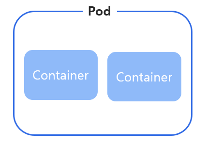
02 · ReplicaSet
ReplicaSet은 클러스터 안에서 움직이는 Pod의 수를 안정적으로 유지합니다. replicas의 수와 실제 가동 중인 Pod 수가 일치하는지 확인하여, 부족하면 새로 Pod를 추가하고 많으면 여분의 Pod를 정지시킵니다. 애플리케이션의 가용성을 보장하거나 부하를 분산하기 위해 사용합니다.
Pod 하나만 배포하면 그 Pod가 죽었을 때 아무도 대신 살려주지 않습니다. 여러 개의 동일한 Pod를 "항상 N개"로 유지해줄 주체가 있어야 가용성과 부하분산을 보장할 수 있습니다.
트래픽에 맞춰 동일한 역할의 Pod를 여러 개 띄워야 하는 무상태(stateless) 서비스.
편의점 사장님이 "이 시간대엔 항상 알바생 3명"이라고 정해두면, 누가 그만둬도 자동으로 충원되고 너무 많이 뽑히면 한 명을 돌려보내는 것과 같습니다. 즉, ReplicaSet은 이 "항상 N개"를 사람 대신 지켜주는 관리자라는 뜻입니다.
ReplicaSet 생성
apiVersion: apps/v1 kind: ReplicaSet metadata: name: k8s-rs namespace: cloud labels: app: nginx spec: replicas: 3 selector: matchLabels: app: nginx template: metadata: labels: app: nginx spec: containers: - name: k8s-container image: nginx:1.26$ kubectl create --filename rs.yaml $ kubectl get replicaset --namespace cloud $ kubectl describe replicaset k8s-rs --namespace cloud스케일 업/다운
$ kubectl scale replicaset k8s-rs --replicas 5 --namespace cloud # Pod 개수가 3개에서 5개로 늘어난 것을 확인 (Scale 명령어는 replicas 필드를 갖는 모든 리소스에 사용 가능)
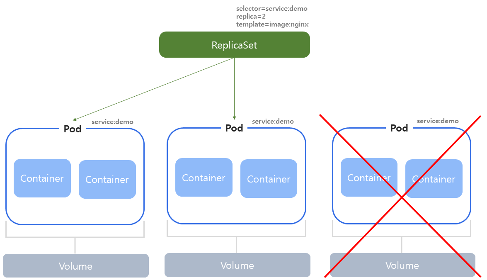
03 · Deployment
Deployment는 ReplicaSet의 상위 개념으로, Pod와 ReplicaSet에 대한 배포를 관리합니다. Pod와 ReplicaSet에 대한 선언적 업데이트(롤링 업데이트, 롤백)를 제공합니다.
| 기능 | ReplicaSet | Deployment |
|---|---|---|
| 주요역할 | 파드의 수를 관리 | ReplicaSet을 생성 및 관리, 고급 배포 기능 제공 |
| 롤링업데이트 | 지원하지 않음 | 지원(중단 없는 애플리케이션 업데이트) |
| 관리편의성 | 수동으로 관리 필요 | 자동 관리, 더 높은 수준의 편의성 제공 |
| 사용사례 | 단순한 파드 수 관리 | 애플리케이션 배포 및 복잡한 업데이트 관리 |
| 자동화수준 | 낮음 | 높음 |
ReplicaSet만으로는 이미지 버전을 바꿀 때 사람이 직접 새 ReplicaSet을 만들고 트래픽을 수동으로 전환해야 합니다. Deployment는 이 버전 전환(롤링 업데이트)과, 문제가 생겼을 때 이전 버전으로 되돌리는 것(롤백)을 자동화합니다.
신버전 배포, 무중단 업데이트, 배포 이력 관리가 필요한 모든 서비스.
가게 간판을 새 것으로 바꾸는 상황을 생각해 보세요. 손님이 계속 드나드는 채로 간판을 한쪽씩 순서대로 바꿔 달면 가게 문을 닫지 않고도 교체할 수 있습니다 — 이것이 롤링 업데이트입니다. 그리고 새 간판이 마음에 안 들면 "이전 간판으로 되돌리기" 버튼을 누르는 것이 롤백입니다. Deployment는 이 두 가지를 사람 대신 자동으로 해주는 관리자입니다.
Deployment 생성(명령어 방식)
$ kubectl create deployment k8s-deploy --image=nginx:1.26 --port=80 --replicas=2 --namespace cloud $ kubectl expose deployment k8s-deploy --type=NodePort --port 80 --target-port=80 --name=k8s-svc --namespace cloud롤링 업데이트
$ kubectl create deployment k8s-rolling-up-deploy --image=nginx:1.14 --replicas=2 --port 80 --namespace cloud $ kubectl set image deployment k8s-rolling-up-deploy nginx=nginx:1.15 --record --namespace cloud배포 이력 확인
$ kubectl rollout history deployment k8s-rolling-up-deploy --namespace cloud # REVISION CHANGE-CAUSE # 1 <none> # 2 <none> # 3 kubectl set image deployment k8s-rolling-up-deploy nginx=nginx:1.15 --record=true --namespace=cloud롤백 — 바로 이전 버전으로
$ kubectl rollout undo deployment k8s-rolling-up-deploy --namespace cloud # Image가 nginx:1.14로 복원됨롤백 — 특정 리비전으로
$ kubectl rollout undo deployment k8s-rolling-up-deploy --to-revision 3 --namespace cloud # Image가 nginx:1.15로 복원됨 (revision 3의 이미지)
--record 옵션을 붙여야 kubectl rollout history에 "무슨 명령으로 바뀌었는지(CHANGE-CAUSE)"가 남습니다.
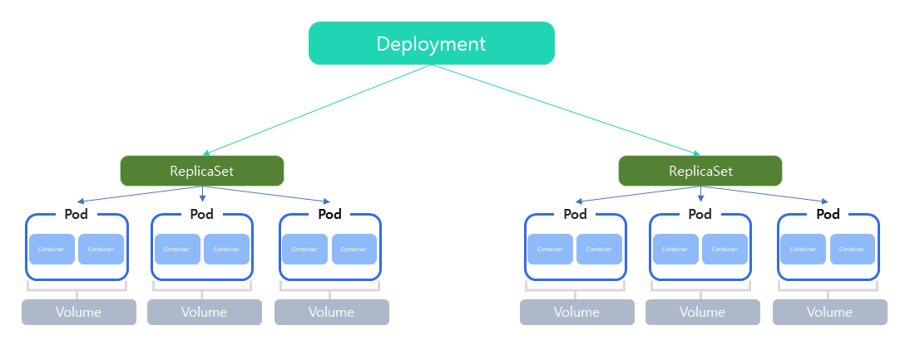
04 · StatefulSet
StatefulSet은 상태가 있는 애플리케이션을 배포하고 관리하기 위한 리소스입니다. Pod가 고유한 네트워크 ID와 스토리지를 가지며, 이러한 Pod를 순차적으로 생성하고 삭제하는 기능을 제공합니다.
Deployment가 관리하는 Pod는 이름이 랜덤하게 생성되고 어떤 Pod든 서로 교체 가능하다고 가정합니다(무상태 전제). 하지만 데이터베이스 클러스터처럼 "이 Pod가 몇 번째 노드인지, 어떤 데이터를 갖고 있는지"가 중요한 경우에는, 재시작해도 같은 식별자와 같은 볼륨을 유지하는 방식이 필요합니다.
데이터베이스, 메시지 큐 등 상태를 가지는 클러스터형 애플리케이션.
Deployment가 관리하는 Pod들이 "번호표 없는 대기 손님"이라면, StatefulSet이 관리하는 Pod는 "1번, 2번, 3번 좌석이 정해진 손님"입니다. 즉, 어떤 Pod가 죽었다가 다시 살아나도 같은 번호(이름)와 같은 자리(데이터)를 그대로 돌려받는다는 뜻입니다. 데이터베이스처럼 "누가 몇 번째 서버이고 어떤 데이터를 갖고 있는지"가 중요한 경우에 필요합니다.
StatefulSet 생성
이 코드가 하는 일을 한 줄로 요약하면: 이름이
k8s-statefulset-0,-1,-2인 Pod 3개를 순서대로 만들고, 각자 임시 저장공간(emptyDir)을 갖게 하는 정의입니다.apiVersion: apps/v1 kind: StatefulSet metadata: name: k8s-statefulset namespace: k8s-namespace spec: serviceName: "k8s-service" replicas: 3 updateStrategy: type: OnDelete selector: matchLabels: app: nginx template: metadata: labels: app: nginx spec: containers: - name: nginx image: nginx:1.21 volumes: - name: k8s-volume emptyDir: {}$ kubectl create --filename statefulset.yaml $ kubectl get pods --namespace k8s-namespace # k8s-statefulset-0, k8s-statefulset-1, k8s-statefulset-2 순서로 0번부터 차례로 생성됨
serviceName은 Headless Service의 이름을 지정하며, 이 Service가 각 Pod에 고유한 DNS 이름을 부여합니다. updateStrategy.type은 RollingUpdate(순차적 업데이트) 또는 OnDelete(Pod 삭제 후 수동 업데이트) 중 선택합니다.
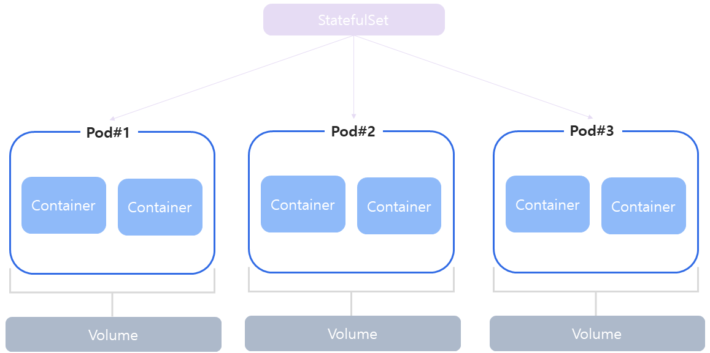
05 · Job
Job은 Pod의 일회성 작업을 실행하고, 작업이 성공적으로 완료되면 Pod가 종료되는 리소스입니다. 단일 Job, 다중 Job(순차), 병렬 Job 세 가지 종류가 있습니다.
Deployment/ReplicaSet은 "항상 떠 있어야 하는" 워크로드를 위한 것이라, 작업이 끝나도 계속 재시작을 시도합니다. 데이터 마이그레이션, 배치 집계, 초기화 스크립트처럼 "한 번 실행하고 끝나면 되는" 작업에는 다른 컨트롤러가 필요합니다.
데이터 마이그레이션, 배치 집계, 초기화(init) 작업, 일회성 스크립트 실행.
단일 Job(명령어 방식)
$ kubectl create job k8s-job --namespace k8s-namespace --image=busybox -- date $ kubectl get job --namespace k8s-namespace $ kubectl get pod --namespace k8s-namespace # STATUS가 Completed로 표시됨 $ kubectl logs k8s-job-xxxxx --namespace k8s-namespace단일 Job(yaml 방식, restartPolicy: Never)
apiVersion: batch/v1 kind: Job metadata: name: k8s-job namespace: k8s-namespace spec: template: spec: containers: - name: k8s-container image: busybox command: ["echo", "Platform as a service!"] restartPolicy: Never실패 시에만 재시작 + 재시도 횟수 제한
apiVersion: batch/v1 kind: Job metadata: name: k8s-job namespace: k8s-namespace spec: template: spec: containers: - name: k8s-container image: busybox args: ["date"] restartPolicy: OnFailure backoffLimit: 2다중 Job — completions로 순차 실행 횟수 지정(3개 순차 실행)
apiVersion: batch/v1 kind: Job metadata: name: k8s-job namespace: k8s-namespace spec: completions: 3 template: metadata: labels: app: k8s spec: restartPolicy: OnFailure containers: - name: k8s-container image: busybox command: ["sleep", "30"]병렬 Job — parallelism으로 동시 실행 개수 지정(3개 동시 실행)
apiVersion: batch/v1 kind: Job metadata: name: k8s-job namespace: k8s-namespace spec: completions: 3 parallelism: 3 template: metadata: labels: app: k8s spec: restartPolicy: OnFailure containers: - name: k8s-container image: quay.io/prometheus/busybox command: ["sleep", "20"]
Job의 restartPolicy는 Never 또는 OnFailure만 사용할 수 있습니다(상시 실행을 전제로 하는 Always는 Job에 맞지 않음). backoffLimit은 실패한 Pod를 재시도할 수 있는 최대 횟수를 지정합니다.
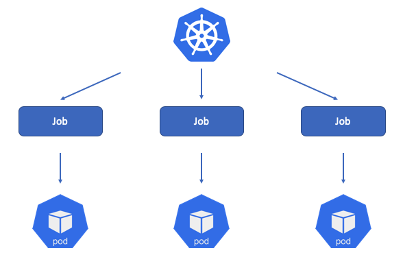
06 · CronJob
CronJob은 정해진 스케줄에 따라 주기적으로 작업을 실행합니다. 데이터 백업, 데이터 점검, 보고서 생성과 같은 주기적인 작업을 자동화하는 데 적합합니다.
Job은 "한 번 실행"만 담당합니다. "매일 새벽에 백업"처럼 반복 주기가 있는 작업까지 사람이 매번 Job으로 만들 수는 없으므로, 스케줄에 따라 Job을 자동 생성해주는 컨트롤러가 필요합니다.
정기 백업, 로그/리소스 정리, 정기 리포트 생성.
CronJob 생성(yaml)
이 코드가 하는 일을 한 줄로 요약하면: "매 1분마다" 컨테이너 하나를 새로 띄워서 20초짜리 작업을 실행하고, 성공 기록은 2개·실패 기록은 1개까지만 남기는 정의입니다.
apiVersion: batch/v1 kind: CronJob metadata: name: k8s-cronjob namespace: k8s-namespace spec: schedule: "*/1 * * * *" jobTemplate: spec: template: spec: restartPolicy: Never containers: - name: k8s-container image: kubetm/init command: ["sh", "-c", "echo 'start';sleep 20; echo 'end'"] terminationGracePeriodSeconds: 0 successfulJobsHistroyLimit: 2 failedJobsHistoryLimit: 1명령어로 생성 및 확인
$ kubectl create cronjob k8s-cronjob --namespace k8s-namespace --image=busybox --schedule="*/1 * * * *" -- date $ kubectl get cronjob --namespace k8s-namespace $ kubectl get pod --namespace k8s-namespace # k8s-cronjob-29358863-lh88k, -29358864-6fksh, -29358865-4ns7b 처럼 매 분 새 Pod가 생성/완료됨 $ kubectl describe cronjob k8s-cronjob --namespace k8s-namespace # Successful Job History Limit: 3 / Failed Job History Limit: 1
successfulJobsHistoryLimit/failedJobsHistoryLimit(기본값: 성공 3개, 실패 1개)을 넘는 오래된 완료 Pod는 자동으로 삭제됩니다.
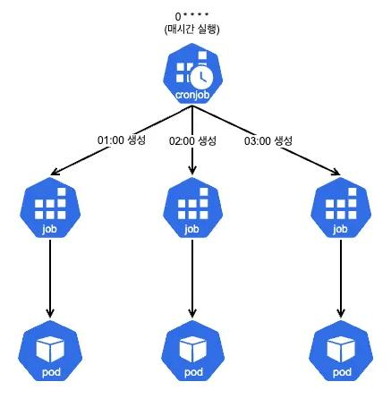
07 · DaemonSet
DaemonSet은 클러스터 전체 노드에 특정 Pod를 실행할 때 사용하는 컨트롤러입니다. 각 노드마다 배치되어야 하는 특성이 있는 성능 수집, 로그 수집, 스토리지 서비스가 필요할 때 사용합니다.
ReplicaSet/Deployment는 "총 N개"만 유지할 뿐 어느 노드에 배치되는지는 신경 쓰지 않습니다. 로그 수집처럼 "노드마다 정확히 1개씩 반드시 있어야 하는" 워크로드는 이 보장이 없으면 성립하지 않습니다.
로그 수집기(fluentd), 모니터링 에이전트, 노드 단위 네트워크 플러그인.
아파트 단지의 경비원을 동마다 정확히 1명씩 배치하는 것과 같습니다. 몇 명이 필요한지 미리 세지 않아도, 새 동(노드)이 생기면 자동으로 경비원(Pod)이 1명 배치되고, 동이 없어지면 그 경비원도 함께 사라집니다.
DaemonSet 생성
이 코드가 하는 일을 한 줄로 요약하면: 로그 수집기(fluentd) 컨테이너를 클러스터의 모든 노드(Master 포함)에 1개씩 배치하는 정의입니다.
apiVersion: apps/v1 kind: DaemonSet metadata: name: k8s-daemonset namespace: kube-system labels: k8s-app: fluentd-logging spec: selector: matchLabels: name: fluentd-elasticsearch template: metadata: labels: name: fluentd-elasticsearch spec: tolerations: - key: node-role.kubernetes.io/control-plane operator: Exists effect: NoSchedule - key: node-role.kubernetes.io/master operator: Exists effect: NoSchedule containers: - name: k8s-container image: quay.io/fluentd_elasticsearch/fluentd:v2.5.2 volumeMounts: - name: k8s-log mountPath: /var/log terminationGracePeriodSeconds: 30 volumes: - name: k8s-log hostPath: path: /var/log$ kubectl create --filename daemonset.yaml $ kubectl get pods --namespace kube-system -o wide # k8s-master1, k8s-worker1, k8s-worker2, k8s-worker3 — 전체 노드에 1개씩 배포된 것을 확인
로그 수집기는 관리용 Pod이므로 kube-system Namespace에 배포하며, Master 노드에도 배치되도록 control-plane Taint에 대한 Toleration을 명시합니다.
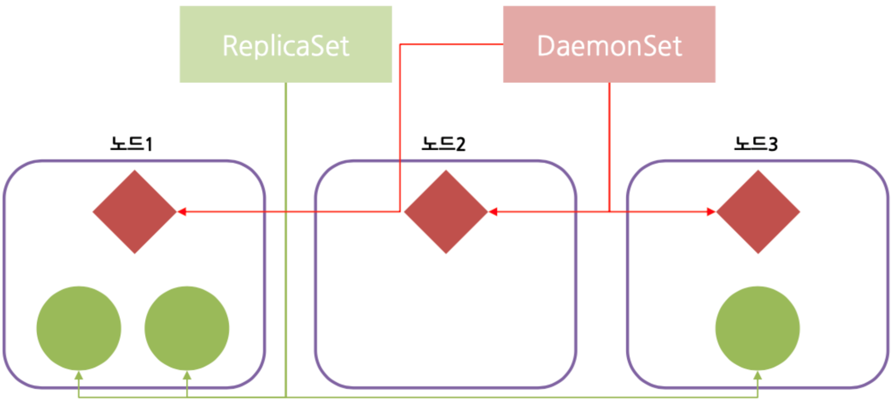
Kubernetes 네트워크 — 클러스터 안으로 어떻게 들어오는가
외부와 연결하는 방법 — Service로 고정된 접근점을 만들고, Ingress로 여러 서비스를 하나의 진입점에서 나눠줍니다.
01 · Service
Service는 라벨을 가진 Pod를 묶어 단일 엔드포인트(ClusterIP, NodePort, LoadBalancer, ExternalName)를 제공해주는 기능입니다. 클러스터 내부에서 고정적인 IP를 갖고 있으며, Pod가 변경되어도 Service의 IP는 변하지 않기 때문에 클러스터 내/외부와의 통신을 계속 유지할 수 있습니다. Pod 간의 로드밸런싱을 지원하고, 멀티포트도 지원합니다.
| 타입 | 설명 |
|---|---|
ClusterIP | 내부 전용 통신으로 컨테이너끼리 클러스터 내부에서만 접근 가능 |
NodePort | 클러스터 외부에서 접근이 가능하도록 각 노드의 IP·포트를 개방 |
LoadBalancer | 클라우드 서비스에서 제공하는 로드밸런서를 사용하여 외부에서 접근하도록 하는 방식 |
ExternalName | 외부 API 또는 DB에 연결 시 서비스 이름을 외부 도메인(DNS)과 연결 |
Pod는 재생성될 때마다 IP가 바뀝니다. 다른 서비스나 사용자가 매번 바뀌는 Pod IP를 추적할 수 없으므로, "Pod가 몇 개든 어떻게 바뀌든 항상 같은 주소로 접근할 수 있는" 고정 접근점이 필요합니다.
내부 마이크로서비스 간 통신(ClusterIP), 개발·테스트 환경에서 노드 IP로 바로 접근(NodePort), 운영 환경에서 클라우드 공인 IP로 노출(LoadBalancer), 외부 API·DB를 클러스터 내부 이름으로 참조(ExternalName).
식당이 이사를 가도 대표 전화번호는 그대로인 것과 같습니다. 안에서 요리하는 사람(Pod)이 계속 바뀌어도, 손님(다른 서비스·사용자)은 항상 같은 전화번호(Service)로 걸면 되고, 그 뒤에서 누가 전화를 받을지는 Service가 알아서 배정해 줍니다.
ClusterIP Service 정의(yaml)
이 코드가 하는 일을 한 줄로 요약하면:
app: hello라벨이 붙은 Pod들을 묶어서, 클러스터 내부에서만 접근 가능한 고정 주소(8080번 포트)를 만들어주는 정의입니다.apiVersion: v1 kind: Service metadata: name: k8s-service namespace: default labels: app: hello spec: type: ClusterIP ports: - name: http protocol: TCP port: 8080 targetPort: 80 selector: app: helloNodePort 실습
$ kubectl create deployment k8s-nodeport-deploy --image=nginx:1.26 --port=80 --replicas=2 --namespace cloud $ kubectl expose deployment k8s-nodeport-deploy --type=NodePort --port 80 --target-port=80 --name=k8s-nodeport-svc --namespace cloud # 브라우저 접속: {KUBERNETES_IP}:{NODE_PORT}ClusterIP 실습 — 내부에서만 접근 가능함을 확인
$ kubectl get service --namespace cloud -o wide $ curl 10.233.53.190:8080 # 클러스터 내부(예: 테스트용 Pod 안)에서만 curl 가능, 3개 Pod에 라운드로빈으로 분산됨LoadBalancer 실습 — External-IP 확인
$ kubectl get service -o wide --namespace cloud # k8s-loadbalancer-svc LoadBalancer 10.233.58.179 192.168.0.180 80:31194/TCP # External-IP에 공인 IP를 할당하면 외부에서 접근 가능
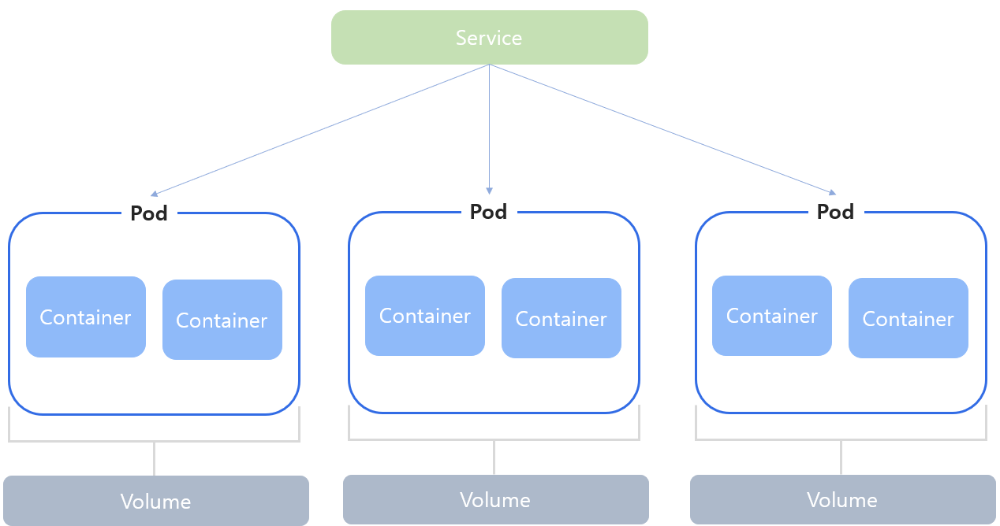
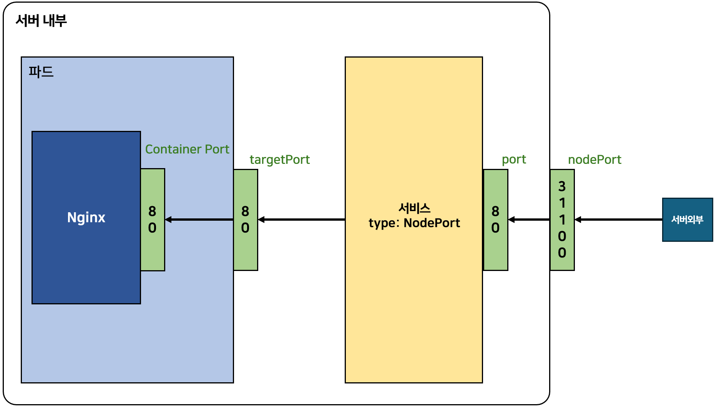
02 · Ingress
Ingress는 HTTP(S) 기반의 L7 로드밸런싱 기능을 제공하는 컴포넌트로서, 외부에서 쿠버네티스 클러스터 내부로 들어오는 네트워크 요청을 처리합니다. 외부에서 쿠버네티스에서 실행 중인 Deployment와 Service에 접근하기 위한 일종의 관문(Gateway) 역할을 합니다.
Service의 NodePort/LoadBalancer는 서비스 하나당 포트 하나(혹은 공인 IP 하나)씩 필요해, 서비스가 많아지면 비효율적입니다. Ingress는 하나의 진입점에서 경로(Path)나 호스트명(Host)에 따라 트래픽을 여러 Service로 나눠줍니다.
여러 마이크로서비스를 하나의 도메인·IP 아래 경로별로 노출(/hello, /grafana, /httpd), 서브도메인별로 서로 다른 서비스를 노출(k8s.hello.com, k8s.grafana.com, k8s.httpd.com).
건물 안내데스크에 비유할 수 있습니다. 방문객은 건물 정문(하나의 진입점)으로 들어와서 "회계팀은 3층, 인사팀은 5층"이라고 안내데스크(Ingress)가 알려주는 대로 이동합니다. 즉, 부서(서비스)마다 별도의 출입구를 만들 필요 없이 정문 하나에서 경로별로 나눠주는 방식입니다.
Ingress 정의(yaml, 경로 기반)
이 코드가 하는 일을 한 줄로 요약하면:
/hello경로로 들어오는 요청을helloService로 넘겨주는 라우팅 규칙입니다.apiVersion: networking.k8s.io/v1 kind: Ingress metadata: name: k8s-ingress annotations: nginx.ingress.kubernetes.io/rewrite-target: / spec: ingressClassName: nginx rules: - http: paths: - path: /hello pathType: Prefix backend: service: name: hello port: name: http방법1) 경로 기반 라우팅 — kubectl로 Ingress 생성
$ kubectl create ingress k8s-ing --class=nginx --rule="k8s.ingress.com/=k8s-ing-svc:80" --namespace cloud $ kubectl get ingress --namespace cloud $ kubectl describe ingress k8s-ing --namespace cloud # 브라우저 접속: http://{HOST}방법2) 여러 Service를 경로별로 라우팅(IP + 여러 Path)
$ kubectl get service --namespace=ingress-nginx # ingress-nginx-controller가 LoadBalancer 타입으로 사전에 설치되어 있어야 Ingress 사용 가능 $ curl {공인IP}:31080/hello $ curl {공인IP}:31080/httpd방법3) Host 기반 라우팅 — 서로 다른 도메인마다 다른 Service로 연결
$ curl k8s.hello.com $ curl k8s.grafana.com
ingressClassName으로 어떤 Ingress Controller가 이 Ingress를 처리할지 지정하고, rules.http.paths의 pathType: Prefix로 경로 매칭 방식을 지정합니다. host 필드를 추가하면 도메인 기준으로도 라우팅할 수 있습니다.
Ingress를 사용하려면 ingress-nginx-controller가 사전에 설치되어 있어야 합니다(LoadBalancer 타입 Service로 배포되어 공인 IP와 NodePort를 갖습니다).
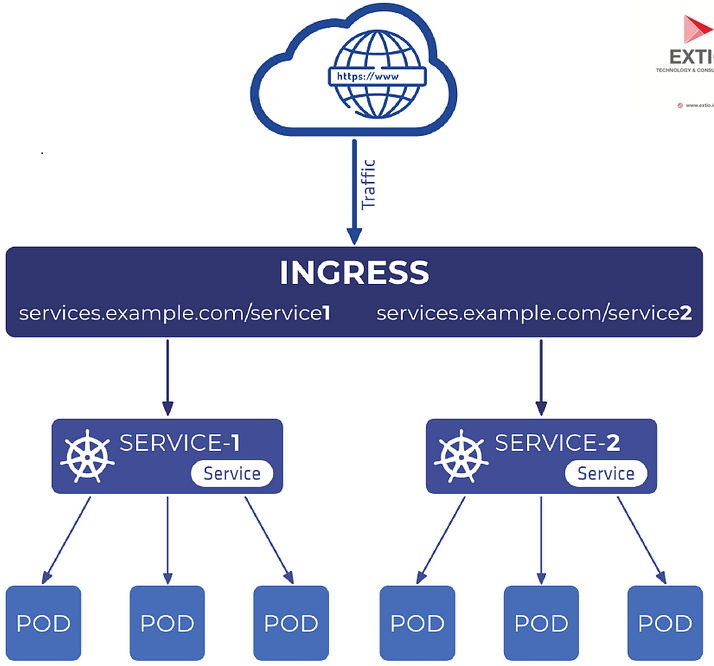
Kubernetes 구성 — 설정과 비밀정보 분리
설정과 데이터를 분리하는 방법(1) — ConfigMap/Secret으로 코드와 설정을 분리합니다.
01 · ConfigMap
ConfigMap은 컨테이너에서 필요한 환경설정 내용을 컨테이너와 분리해서 제공해주기 위한 기능입니다. 데이터베이스 주소, 포트번호, 환경변수 값 등과 같은 설정 정보를 저장합니다.
설정값(예: DB 접속 주소)이 이미지 안에 하드코딩되어 있으면 환경(dev/prod)마다 이미지를 다시 만들어야 합니다. 설정을 이미지 밖으로 빼면 같은 이미지를 환경별로 재사용할 수 있습니다.
환경별로 달라지는 값(엔드포인트 주소, 기능 플래그, 포트 등)을 이미지 변경 없이 주입해야 하는 모든 컨테이너.
명령어로 ConfigMap 생성
$ kubectl create configmap k8s-cm --from-literal=CLOUD="Cloud Native" -n cloud $ kubectl create configmap k8s-cm2 --from-literal=CLOUD="Native" --from-literal=PaaS="Platform as a service!" --namespace=cloud단일 키만 주입 — env.valueFrom.configMapKeyRef
이 코드가 하는 일을 한 줄로 요약하면: ConfigMap(k8s-cm)에 저장된 값 중
CLOUD키 하나만 골라서, 컨테이너의 환경변수K8S_ENV로 넣어주는 정의입니다.apiVersion: v1 kind: Pod metadata: name: k8s-cm-pod namespace: cloud spec: containers: - image: busybox name: k8s-container env: - name: K8S_ENV valueFrom: configMapKeyRef: name: k8s-cm key: CLOUD command: ["/bin/sh"] args: ["-c", "while true; do echo $(K8S_ENV); sleep 10;done"]ConfigMap 전체 키를 한 번에 주입 — envFrom.configMapRef
이 코드가 하는 일을 한 줄로 요약하면: ConfigMap(k8s-cm2) 안의 모든 키를 하나하나 지정하지 않고 통째로 컨테이너의 환경변수로 넣어주는 정의입니다.
apiVersion: v1 kind: Pod metadata: name: k8s-cm-pod2 namespace: cloud spec: containers: - image: busybox name: k8s-container envFrom: - configMapRef: name: k8s-cm2 command: ["/bin/sh"] args: ["-c", "while true; do echo $(CLOUD); sleep 10;done"]주입된 값 확인
$ kubectl exec -it k8s-cm-pod --namespace cloud -- sh / # env # K8S_ENV=Cloud Native 처럼 주입된 값 확인 가능
02 · Secret
Secret은 Password, Auth Token, SSH Key와 같은 민감한 정보를 저장하는 용도로 사용합니다. data 필드의 값은 Base64로 인코딩해서 저장합니다.
민감정보를 ConfigMap과 같은 방식(평문)으로 다루면 클러스터 리소스를 볼 수 있는 누구나 값을 그대로 확인할 수 있습니다. Secret으로 분리해 별도의 리소스 종류로 관리하면, RBAC로 Secret에 대한 접근 권한만 따로 좁혀서 통제할 수 있습니다.
DB 비밀번호, API 토큰, SSH 키처럼 노출되면 안 되는 값.
Secret의 Base64 "인코딩"은 자물쇠가 아니라 그냥 "다른 방식으로 표기만 바꾼 것"입니다. 마치 문장을 거꾸로 쓴 것처럼, 규칙만 알면 누구나 원래 글자로 되돌릴 수 있습니다. 즉, Secret이라는 이름이 붙었다고 저절로 안전해지는 게 아니라, 누가 이 값을 볼 수 있는지(RBAC 권한)를 별도로 관리해야 진짜로 안전해진다는 뜻입니다.
명령어로 Secret 생성
$ kubectl create secret generic k8s-secret --from-literal=CLOUD="Cloud Native" --namespace cloudyaml로 Secret 생성(data 값은 Base64 인코딩)
이 코드가 하는 일을 한 줄로 요약하면:
PAAS라는 키에 Base64로 인코딩된 값을 담은 Secret을 만드는 정의입니다(디코딩하면 "Platform as a service!").apiVersion: v1 kind: Secret metadata: name: k8s-secret namespace: cloud type: Opaque data: PAAS: UGxhdGZvcm0gYXMgYSBzZXJ2aWNlIQ==환경변수로 주입 — 단일 키(secretKeyRef) / 전체 키(secretRef)
# 단일 키 env: - name: CLOUD_ENV valueFrom: secretKeyRef: name: k8s-secret key: CLOUD # 전체 키 envFrom: - secretRef: name: k8s-secret2파일(볼륨)로 마운트
이 코드가 하는 일을 한 줄로 요약하면: Secret(k8s-secret3)을 환경변수가 아니라
/secrets경로의 파일로 컨테이너 안에 넣어주는 정의입니다.apiVersion: v1 kind: Pod metadata: name: k8s-secret-pod3 namespace: cloud spec: containers: - image: redis name: k8s-container volumeMounts: - name: k8s-volume mountPath: "/secrets" readOnly: true volumes: - name: k8s-volume secret: secretName: k8s-secret3$ kubectl exec -it k8s-secret-pod3 --namespace cloud -- sh / # cd /secrets && ls PAAS / # cat PAAS Platform as a service!
Secret의 data 값은 Base64로 "인코딩"된 것이지 "암호화"된 것이 아닙니다. 디코딩하면 누구나 원문을 볼 수 있으므로, Secret 자체를 안전한 저장소로 여기기보다 RBAC로 Secret에 대한 접근 권한을 별도로 좁혀 관리해야 합니다.
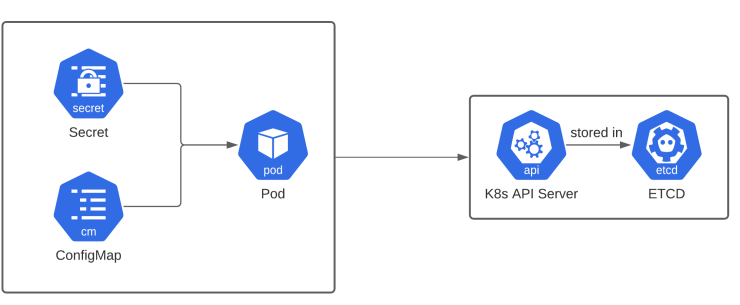
Kubernetes 스토리지 — 데이터를 어떻게 유지하는가
설정과 데이터를 분리하는 방법(2) — Volume/PV/PVC로 Pod의 생명주기와 데이터의 생명주기를 분리합니다.
01 · Volume 기초 & PV/PVC 개념
Volume 타입은 크게 세 가지로 나뉩니다.
| 구분 | 종류 |
|---|---|
| 임시디스크 | emptyDir |
| 로컬디스크 | hostPath |
| 네트워크디스크 | Glusterfs, gitRepo, iscsi, gcePersistentDisk, awsElasticBlockStore, azureDisk, vsphere-volume 등 |
Volume의 속성으로는 Capacity(저장 용량 정의)와 VolumeMode(Filesystem은 Pod 디렉토리에 마운트, Block은 Block Device로 Pod에 제공)가 있습니다.
- PersistentVolume(PV) — 호스트 서버의 볼륨과 컨테이너 내부의 볼륨을 마운트해 유지하기 위해 사용한다. Pod가 종료되어도 PV에 기록된 데이터는 삭제되지 않고 남아있다.
- PersistentVolumeClaim(PVC) — PV를 요청하는 객체다. 사용자가 필요한 스토리지의 크기와 접근 모드(
ReadWriteOnce,ReadOnlyMany,ReadWriteMany)를 정의하고, 이를 기반으로 클러스터 내의 적절한 PV에 바인딩된다.
emptyDir은 Pod가 사라지면 데이터도 함께 사라지고, hostPath는 특정 노드의 로컬 경로에 고정됩니다. 데이터베이스처럼 Pod가 재시작·재배치되어도 데이터가 유지되어야 하는 워크로드에는 "Pod의 생명주기와 분리된" 저장소가 필요하며, 이것이 PV/PVC입니다.
emptyDir은 같은 Pod 내 여러 컨테이너 간 임시 데이터 공유(예: 로그를 쓰는 컨테이너와 읽는 컨테이너), hostPath는 노드 로컬 테스트용 저장, PV/PVC는 재시작·재배치에도 유지되어야 하는 운영 데이터.
Pod를 "세입자", PV를 "우편함"에 비유할 수 있습니다. 세입자(Pod)가 이사를 가거나 바뀌어도 우편함(PV에 저장된 데이터)은 그 자리에 그대로 남아 있습니다. PVC는 "이만한 크기의 우편함이 필요하다"는 신청서이고, 관리자가 미리 마련해둔 우편함(PV) 중 조건에 맞는 것과 자동으로 짝지어(Bound) 줍니다.
사용자가 PVC(요청 크기 + accessMode)를 만들면, 클러스터가 조건에 맞는 PV를 찾아 자동으로 바인딩(Bound)합니다. Pod는 PVC 이름만 참조하면 되고, 실제 어떤 PV에 연결됐는지는 몰라도 됩니다 — 이 역할 분리(관리자가 PV 준비 / 사용자가 PVC로 요청)가 스토리지 계층의 핵심 설계입니다.
emptyDir 예시 — 같은 Pod 안의 두 컨테이너가 로그 파일 공유
이 코드가 하는 일을 한 줄로 요약하면: 같은 Pod 안의 두 컨테이너가 임시 저장공간(emptyDir)을 함께 써서, 한쪽은 로그를 쓰고 다른 한쪽은 그 로그를 읽는 정의입니다.
apiVersion: v1 kind: Pod metadata: name: k8s-emptydir-volume spec: volumes: - name: k8s-log-volume emptyDir: {} containers: - name: k8s-log-writer image: busybox command: ["/bin/sh", "-c"] args: - while true; do echo "$(date)" >> /var/log/k8s.log; sleep 5; done volumeMounts: - name: k8s-log-volume mountPath: /var/log - name: k8s-log-reader image: busybox command: ["/bin/sh", "-c"] args: - tail -f /var/log/k8s.log volumeMounts: - name: k8s-log-volume mountPath: /var/loghostPath 예시 — 노드의 로컬 디렉토리에 로그 저장
이 코드가 하는 일을 한 줄로 요약하면: 컨테이너가 쓰는 로그를 Pod 안에만 남기지 않고, 그 Pod가 떠 있는 노드의 로컬 디스크(
/var/log/k8s-logs)에 직접 저장하는 정의입니다.apiVersion: v1 kind: Pod metadata: name: k8s-hostpath-volume spec: containers: - name: k8s-log-writer image: busybox command: ["sh", "-c"] args: - while true; do echo "$(date)" >> /var/log/k8s.log; sleep 10; done volumeMounts: - name: k8s-log-volume mountPath: /var/log volumes: - name: k8s-log-volume hostPath: path: /var/log/k8s-logs type: DirectoryOrCreatePV / PVC 기본 템플릿
이 코드가 하는 일을 한 줄로 요약하면: k8s-worker-1 노드의 1G짜리 로컬 디스크 공간을 PV로 등록하고(위쪽), 2G를 요청하는 PVC를 만드는(아래쪽) 정의입니다.
apiVersion: v1 kind: PersistentVolume metadata: name: k8s-pv1 spec: storageClassName: k8s-storageclass persistentVolumeReclaimPolicy: Delete capacity: storage: 1G accessModes: - ReadWriteOnce local: path: /data/volumes/pv1 nodeAffinity: required: nodeSelectorTerms: - matchExpressions: - key: kubernetes.io/hostname operator: In values: - k8s-worker-1 --- apiVersion: v1 kind: PersistentVolumeClaim metadata: name: k8s-pvc spec: accessModes: - ReadWriteOnce resources: requests: storage: 2G
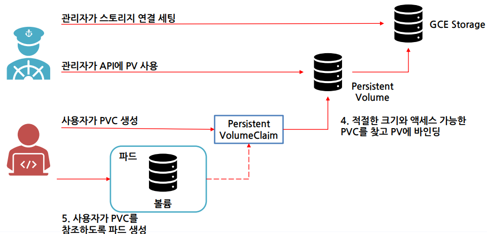
02 · 정적 프로비저닝 — 로컬 PV 수동 매칭
정적 프로비저닝은 관리자가 PV를 미리 만들어두고, 사용자가 만든 PVC의 요청 크기·조건과 일치하는 PV에 자동으로 Bound시키는 방식입니다.
클라우드의 동적 프로비저너가 없는 온프레미스 환경 등에서는, 관리자가 각 노드의 로컬 디스크를 미리 PV로 등록해두고 사용자가 그중 필요한 만큼만 PVC로 요청해서 쓰는 방식이 기본이 됩니다.
온프레미스 클러스터의 로컬 디스크 활용, 노드별로 미리 준비된 저장공간을 팀별 PVC로 나눠 쓰는 경우.
각 워커 노드에 데이터 디렉토리 준비
# k8s-worker1 $ sudo mkdir -p /data/volumes/pv1 && sudo chmod 777 /data/volumes/pv1 # k8s-worker2 $ sudo mkdir -p /data/volumes/pv2 && sudo chmod 777 /data/volumes/pv2 # k8s-worker3 $ sudo mkdir -p /data/volumes/pv3 && sudo chmod 777 /data/volumes/pv3StorageClass 생성(프로비저너 없음 = 정적 프로비저닝용)
이 코드가 하는 일을 한 줄로 요약하면: "이 클러스터의 기본 스토리지 종류는 자동 생성 없이 관리자가 미리 만들어둔 PV를 쓴다"고 정의하는 것입니다.
apiVersion: storage.k8s.io/v1 kind: StorageClass metadata: name: k8s-storageclass annotations: storageclass.kubernetes.io/is-default-class: 'true' provisioner: kubernetes.io/no-provisioner reclaimPolicy: Delete volumeBindingMode: Immediate$ kubectl create --filename storageclass.yaml $ kubectl get storageclass워커별 PV 3개 생성(각 노드에 nodeAffinity로 고정, 용량 1G/2G/3G)
$ kubectl create --filename persistentvolume1.yaml # k8s-worker1, 1G $ kubectl create --filename persistentvolume2.yaml # k8s-worker2, 2G $ kubectl create --filename persistentvolume3.yaml # k8s-worker3, 3G $ kubectl get pv요청 크기가 일치하는 PVC 3개 생성 — 자동으로 같은 용량 PV와 Bound
$ kubectl create --filename persistentvolumeclaim1.yaml # 1G 요청 → k8s-pv1과 Bound $ kubectl get pvc # NAME STATUS VOLUME CAPACITY ACCESS MODES STORAGECLASS # k8s-pvc1 Bound k8s-pv1 1G RWO k8s-storageclassPod가 PVC를 마운트해서 데이터 기록 후, 로컬 디렉토리에서 확인
$ kubectl exec -it k8s-pod1 -- /bin/sh / # cat /mnt/k8s-1.log Platform as a service! # (해당 워커 노드에서) $ cat /data/volumes/pv1/k8s-1.log → 동일한 내용 확인
PV의 accessModes: ReadWriteOnce는 해당 볼륨이 단일 Node에 의해서만 읽기/쓰기 모드로 마운트될 수 있음을 의미합니다. PV는 nodeAffinity로 특정 노드에 고정되므로, Pod도 그 노드에 스케줄링되어야 정상적으로 마운트됩니다.
03 · NFS & 동적 프로비저닝
NFS는 여러 노드가 공유하는 네트워크 스토리지로, PV의 nfs 필드(path + server)로 연결하며 ReadWriteMany(여러 노드가 동시에 읽기·쓰기)가 가능합니다. StorageClass는 PV로 확보한 스토리지 종류를 정의하는 리소스이며, 동적 프로비저닝을 통해 스토리지를 자동으로 생성할 수 있습니다 — PVC가 생성되는 즉시 StorageClass의 provisioner가 실제 볼륨(PV)을 알아서 만들어줍니다.
정적 프로비저닝은 관리자가 미리 정확한 개수·크기의 PV를 준비해둬야 해서 수요 변화에 대응이 느립니다. 동적 프로비저닝은 PVC 요청이 들어올 때마다 스토리지를 자동 생성해 이 수작업을 없앱니다.
여러 Pod·노드가 같은 파일을 공유해야 하는 경우(NFS), 스토리지 요청이 잦아 매번 관리자가 개입하기 어려운 운영 클러스터(동적 프로비저닝).
NFS 방식 PV
이 코드가 하는 일을 한 줄로 요약하면: 192.168.0.1 서버의
/home/share/nfs폴더를 1G짜리 PV로 등록해서, 여러 노드가 네트워크로 공유해 쓸 수 있게 하는 정의입니다.apiVersion: v1 kind: PersistentVolume metadata: name: k8s-pv spec: storageClassName: k8s-storageclass capacity: storage: 1G volumeMode: Filesystem accessModes: - ReadWriteOnce nfs: path: "/home/share/nfs" server: 192.168.0.1동적 프로비저닝 — Helm으로 NFS Provisioner 배포
이 코드가 하는 일을 한 줄로 요약하면: NFS 서버 정보를 담은 설정 파일(values.yaml)을 바탕으로, PVC가 생길 때마다 자동으로 볼륨을 만들어주는 프로그램(provisioner)을 Helm으로 설치하는 것입니다.
# values.yaml (Helm 표준 파일명, 반드시 이 이름으로 작성) nfs: server: {NFS Server IP} path: /home/share/nfs storageClass: provisionerName: k8s-dynamic-provisioner defaultClass: true name: k8s-dynamic-storageclass reclaimPolicy: Retain allowVolumeExpansion: false archiveOnDelete: false$ helm repo add nfs-subdir-external-provisioner https://kubernetes-sigs.github.io/nfs-subdir-external-provisioner $ helm repo update nfs-subdir-external-provisioner $ helm install k8s-dynamic-provisioner nfs-subdir-external-provisioner/nfs-subdir-external-provisioner -f values.yaml --version 4.0.18 $ kubectl get storageclass # k8s-dynamic-storageclass (default) k8s-dynamic-provisioner Retain Immediate falsePVC만 생성하면 PV가 자동으로 만들어져 Bound됨
$ kubectl create --filename persistentvolumeclaim.yaml $ kubectl get pvc # k8s-dynamic-pvc Bound pvc-4d96f4fa-... 1Gi RWO k8s-dynamic-storageclass
Helm 배포 시 values.yaml 파일이 있는 경로에서 명령을 실행해야 그 환경변수 파일이 정상적으로 인식됩니다.
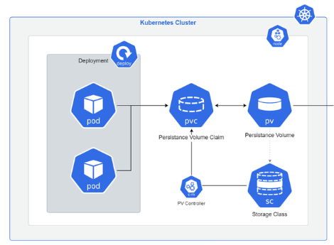
Kubernetes 클러스터 RBAC — 누가 무엇을 할 수 있는가
누가 무엇을 할 수 있는지 통제하는 방법 — RBAC로 User/ServiceAccount별 권한 범위를 좁힙니다.
01 · RBAC 개념 & ClusterRole / ClusterRoleBinding
API 서버에 접근하기 위해서는 인증 작업이 필요합니다. RBAC(Role Based Access Control, 역할 기반 액세스 제어)는 사용자의 역할에 따라 리소스에 대한 접근 권한을 갖게 하는 방식입니다. User는 클러스터 외부에서 쿠버네티스를 조작하는 사용자 인증이고, Service Account는 Pod가 쿠버네티스 API를 다룰 때 사용하는 계정입니다.
| 구분 | User | Service Account |
|---|---|---|
| 사용대상 | 사용자 | Pod |
| 인증방법 | 인증서 기반 | 토큰 기반 |
| 권한관리 | RBAC(Role-Based Access Control) 사용 | RBAC(Role, ClusterRole, Binding) 사용 |
| 라이프사이클 | 클러스터 외부에서 관리 | 클러스터 내부에서 자동 관리 |
ClusterRole은 Namespace에 제한되는 것이 아닌 클러스터 전체에 대한 어떤 API를 사용할지 권한을 정의합니다. ClusterRoleBinding은 사용자, 그룹 및 ServiceAccount와 ClusterRole을 연결하는 역할을 합니다.
모든 사용자·Pod가 클러스터의 모든 리소스를 마음대로 조작할 수 있으면, 실수든 침해든 그 파급 범위가 클러스터 전체가 됩니다. RBAC는 "누가 어떤 리소스에 어떤 행위(verb)를 할 수 있는지"를 좁혀 최소 권한 원칙을 구현합니다.
Node·Namespace처럼 클러스터 전역 리소스에 대한 권한이 필요한 관리자·컨트롤러(ClusterRole + ClusterRoleBinding).
회사 출입카드 등급과 같습니다. 신입사원 카드로는 일반 사무실만 열리고, 서버실이나 임원실은 별도 권한이 있는 카드로만 열리는 것처럼, RBAC는 "이 사용자(또는 이 Pod)가 어떤 리소스를 볼 수만 있는지, 만들고 지울 수도 있는지"를 역할별로 정해두는 규칙입니다.
ClusterRole 정의
이 코드가 하는 일을 한 줄로 요약하면: 클러스터 전체에서 Secret을 조회(get·watch·list)만 할 수 있는 권한 묶음을 정의하는 것입니다.
apiVersion: rbac.authorization.k8s.io/v1 kind: ClusterRole metadata: name: k8s-clusterrole rules: - apiGroups: [""] resources: ["secrets"] verbs: ["get", "watch", "list"]ClusterRoleBinding 정의
이 코드가 하는 일을 한 줄로 요약하면: 위에서 만든 ClusterRole(k8s-clusterrole)의 권한을 실제 사용자(k8s-user)에게 "연결"해서 적용하는 것입니다.
apiVersion: rbac.authorization.k8s.io/v1 kind: ClusterRoleBinding metadata: name: k8s-clusterrolebinding subjects: - kind: User name: k8s-user apiGroup: rbac.authorization.k8s.io roleRef: kind: ClusterRole name: k8s-clusterrole apiGroup: rbac.authorization.k8s.io명령어로 생성 및 확인
$ kubectl create clusterrole k8s-clusterrole --verb=create --resource=pod,deployment,statefulset,daemonset $ kubectl create serviceaccount k8s-serviceaccount --namespace k8s-namespace $ kubectl create clusterrolebinding k8s-clusterrolebinding --clusterrole=k8s-clusterrole --serviceaccount=k8s-namespace:k8s-serviceaccount $ kubectl get clusterrole $ kubectl get clusterrolebinding
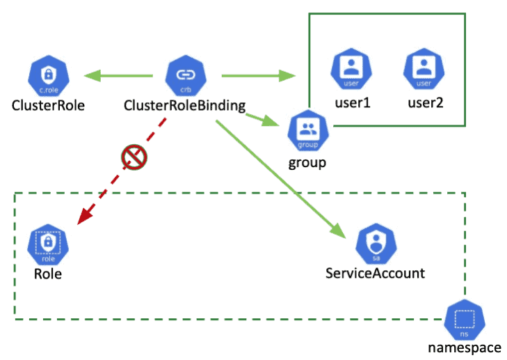
02 · Role / RoleBinding & ServiceAccount
Role은 지정된 Namespace에 대해 어떤 API를 사용할 수 있는지에 대한 권한을 지정합니다(ClusterRole의 네임스페이스 한정판). RoleBinding은 사용자, 그룹 및 ServiceAccount와 Role을 연결하는 역할을 합니다. ServiceAccount는 Pod가 API 서버와 통신할 수 있도록 Pod에 권한을 부여하는 자격증명이며, 클러스터 내부에 동작하고 있는 모든 Pod는 ServiceAccount를 가지고 있습니다.
Namespace 단위로 나눠 쓰는 클러스터에서는 "이 Namespace 안에서만" 통하는 권한이 대부분 필요합니다(클러스터 전체 권한은 과도한 위험을 남깁니다). Role/RoleBinding은 권한 범위를 Namespace로 좁혀 사고 범위를 더 줄입니다.
팀별 Namespace에서 해당 팀의 ServiceAccount에게 그 Namespace의 Pod/Deployment 등만 다루게 허용하는 경우.
Role / RoleBinding 정의
이 코드가 하는 일을 한 줄로 요약하면: k8s-namespace 안에서만 Pod를 조회(get·watch·list)할 수 있는 권한(Role)을 만들고, 그 권한을 사용자(k8s-user)에게 연결(RoleBinding)하는 것입니다.
apiVersion: rbac.authorization.k8s.io/v1 kind: Role metadata: name: k8s-role namespace: k8s-namespace rules: - apiGroups: [""] resources: ["pods"] verbs: ["get", "watch", "list"]apiVersion: rbac.authorization.k8s.io/v1 kind: RoleBinding metadata: name: k8s-rolebinding namespace: k8s-namespace subjects: - kind: User name: k8s-user apiGroup: rbac.authorization.k8s.io roleRef: kind: Role name: k8s-role apiGroup: rbac.authorization.k8s.io명령어로 생성 및 확인
$ kubectl create role k8s-role --verb=get --verb=list --verb=watch --resource=pods --namespace=k8s-namespace $ kubectl create serviceaccount k8s-serviceaccount --namespace=k8s-namespace $ kubectl create rolebinding k8s-rolebinding --role=k8s-role --serviceaccount=k8s-namespace:k8s-serviceaccount --namespace=k8s-namespace $ kubectl get role --namespace=k8s-namespace $ kubectl get rolebinding --namespace=k8s-namespaceServiceAccount를 Pod에 명시적으로 지정
이 코드가 하는 일을 한 줄로 요약하면: 이 Pod가 API 서버와 통신할 때 k8s-serviceaccount라는 계정(자격증명)을 사용하도록 지정하는 정의입니다.
apiVersion: v1 kind: Pod metadata: name: k8s-pod namespace: k8s-namespace spec: serviceAccountName: k8s-serviceaccount containers: - name: k8s-container image: nginx volumeMounts: - name: k8s-token mountPath: "/var/run/secrets/Kubernetes.io/serviceaccount" readOnly: true volumes: - name: k8s-token projected: sources: - serviceAccountToken: path: token expirationSeconds: 3600 audience: "https://kubernetes.default.svc"$ kubectl get pod k8s-pod --namespace k8s-namespace -o yaml # serviceAccountName: k8s-serviceaccount 로 지정된 것을 확인
쿠버네티스 v1.24 이후 버전은 ServiceAccount 토큰이 자동으로 생성되지 않기 때문에, type: kubernetes.io/service-account-token인 Secret을 별도로 생성해야 합니다.
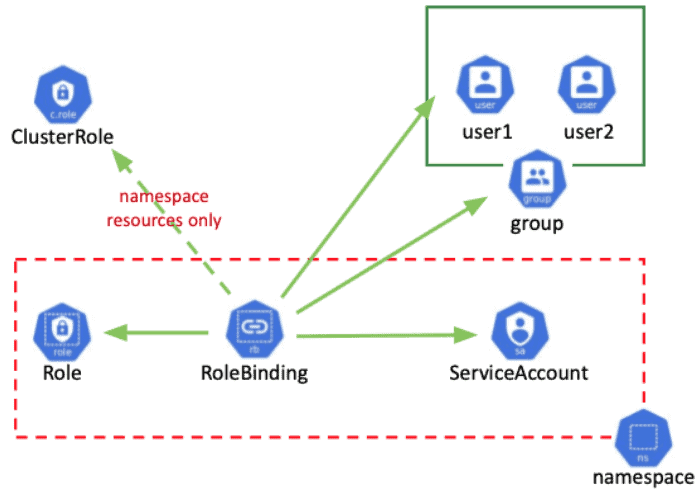
03 · Context — 멀티 클러스터·사용자 전환
Context는 kubeconfig(Config) 파일을 사용해 여러 개의 클러스터에 접근할 수 있도록 등록하는 기능입니다. 사용할 클러스터, 사용자, Namespace를 하나로 묶어 "어떤 클러스터에 어떤 사용자로 접근할지"를 설정합니다.
실무에서는 개발·운영 클러스터, 혹은 서로 다른 권한 수준의 사용자 인증서를 넘나들며 작업해야 합니다. 매번 인증서 경로와 서버 주소를 다시 입력하는 대신, Context 하나를 전환하는 것만으로 "클러스터+사용자+Namespace" 조합 전체를 바꿀 수 있어야 실수를 줄일 수 있습니다.
한 사람이 여러 클러스터(혹은 여러 권한 수준의 계정)를 오갈 때, RBAC로 제한한 사용자 권한이 실제로 의도대로 작동하는지 검증할 때.
User 인증서 발급(클러스터 CA로 서명)
$ openssl genrsa -out kuber-user.key 2048 $ openssl req -new -key kuber-user.key -subj "/CN=kuber/O=Kubernetes Korea Group" -out kuber-user.csr $ sudo openssl x509 -req -in kuber-user.csr -CA /etc/kubernetes/ssl/ca.crt -CAkey /etc/kubernetes/ssl/ca.key -CAcreateserial -out kuber-user.crt -days 10000해당 User에게 Role/RoleBinding으로 권한 부여
예: deployments/replicasets/pods/services 리소스에 get/list/watch/create/update/patch/delete 권한을 부여한다.
User 인증 정보를 kubeconfig에 등록
$ kubectl config set-credentials kuber-user --client-certificate=kuber-user.crt --client-key=kuber-user.key --embed-certs=trueContext 등록 — 클러스터+사용자+네임스페이스 묶기
$ kubectl config set-context kuber-context --cluster=cluster-host --user=kuber-user --namespace=k8s-namespaceContext 조회 및 전환
$ kubectl config get-context $ kubectl config use-context kuber-context권한 범위 검증 — 부여받지 않은 Namespace를 조회하면 거부됨
$ kubectl get pod --namespace defaults # Error from server (Forbidden): pods is forbidden: User "kuber-user" cannot list resource "pods" in API group "" in the namespace "defaults"현재 컨텍스트 확인
$ kubectl config view $ kubectl config current-context
RoleBinding으로 부여한 권한 범위(Namespace, 리소스, verb) 밖의 요청은 Forbidden 에러로 거부됩니다 — 이것은 설정 실수가 아니라 RBAC가 의도대로 최소 권한을 강제하고 있다는 뜻입니다.
실전 실습 자료 — 2026-07-16 · 07-20 수업 원본 YAML
이 절은 실제 2026-07-16 · 07-20 수업에서 진행한 실습 원본 파일입니다. 재구성한 예시가 아니라, 그 날 수업에서 작성하고 실제로 배포까지 실행한 YAML을 그대로 옮겨 놓았습니다. Part Ⅰ~Ⅱ에서 배운 개념이 그 수업에서 어떤 이름·네임스페이스·이미지 태그로 실제 작성됐는지 확인할 수 있습니다.
앞선 Part들이 리소스별 개념과 표준 예시를 설명했다면, 이 절은 그 개념이 실제 수업에서 어떤 파일명·라벨·replicas 값으로 구현됐는지를 그대로 보여줍니다. 원본 폴더는 20260716_node,ns,po,rs,deploy/와 20260720_sts,job,cronjob,daemonset,svc/ 두 개이며, 오탈자(예: 파일 내부의 contianer 표기)도 실습 과정의 일부로 그대로 남겨두었습니다.
01 · Namespace & Node — 실행 환경 만들기 (2026-07-16)
수업은 먼저 cloud 네임스페이스를 만들었습니다(이후 Pod·ReplicaSet·Deployment 실습은 이 네임스페이스에서 진행). 다만 Node 파트에서 배운 Cordon/Taint·Toleration 개념을 검증한 아래 두 Deployment는 네임스페이스를 지정하지 않아 default에 배포되며, 서로 다른 replicas 수(5 vs 8)로 스케줄링 차이를 비교했습니다.
namespace.yaml — cloud 네임스페이스 생성
apiVersion: v1 kind: Namespace metadata: name: cloudnode-deployment.yaml — Cordon 실습용 Deployment (toleration 없음, replicas 5)
apiVersion: apps/v1 kind: Deployment metadata: name: k8s-deployment namespace: default spec: replicas: 5 selector: matchLabels: apps: apps template: metadata: labels: apps: apps spec: containers: - name: container image: nginx:latest ports: - containerPort: 80 protocol: TCPnode-toleration.yaml — Taint/Toleration 실습용 Deployment (control-plane toleration 적용, replicas 8)
apiVersion: apps/v1 kind: Deployment metadata: name: nginx-toleration namespace: default spec: replicas: 8 selector: matchLabels: apps: apps template: metadata: labels: apps: apps spec: containers: - name: container image: nginx:latest ports: - containerPort: 80 protocol: TCP tolerations: - key: "node-role.kubernetes.io/control-plane" operator: "Equal" effect: "NoSchedule"
02 · Pod — 멀티 컨테이너 & 환경변수 (2026-07-16)
Pod 파트에서 다룬 멀티 컨테이너 구성과 환경변수 주입을 실제로 작성한 파일입니다.
pod-multi.yaml — nginx + redis + memcached 멀티 컨테이너 Pod
apiVersion: v1 kind: Pod metadata: name: k8s-multi-contianer-pod namespace: cloud spec: containers: - image: nginx name: k8s-container1 - image: redis name: k8s-container2 - image: memcached name: k8s-container3pod-env.yaml — 환경변수(CLOUD)를 주입하는 Pod
apiVersion: v1 kind: Pod metadata: name: k8s-env-pod namespace: cloud spec: containers: - image: busybox name: k8s-container env: - name: CLOUD value: "Platform as a service!" command: ["/bin/sh"] args: ["-c","while true;do echo $(CLOUD);sleep 10;done"]
03 · ReplicaSet (2026-07-16)
replicas 3개짜리 nginx ReplicaSet을 cloud 네임스페이스에 생성한 실습 파일입니다.
apiVersion: apps/v1
kind: ReplicaSet
metadata:
name: k8s-rs
namespace: cloud
labels:
app: nginx
spec:
replicas: 3
selector:
matchLabels:
app: nginx
template:
metadata:
labels:
app: nginx
spec:
containers:
- name: k8s-container
image: nginx:1.2604 · Deployment & Service (2026-07-16)
기본 Deployment, 롤링 업데이트용 Deployment, 그리고 그 Deployment를 외부에 노출하는 NodePort Service를 각각 별도 파일로 작성했습니다.
deployment.yaml — k8s-deploy (nginx:1.26, replicas 2)
apiVersion: apps/v1 kind: Deployment metadata: labels: app: k8s-deploy name: k8s-deploy namespace: cloud spec: replicas: 2 selector: matchLabels: app: k8s-deploy template: metadata: labels: app: k8s-deploy spec: containers: - image: nginx:1.26 name: nginx ports: - containerPort: 80deployment-rolling-up.yaml — 롤링 업데이트 실습용 (nginx:1.14, replicas 2)
apiVersion: apps/v1 kind: Deployment metadata: labels: app: k8s-rolling-up-deploy name: k8s-rolling-up-deploy namespace: cloud spec: replicas: 2 selector: matchLabels: app: k8s-rolling-up-deploy template: metadata: labels: app: k8s-rolling-up-deploy spec: containers: - image: nginx:1.14 name: nginx ports: - containerPort: 80service.yaml — k8s-deploy를 외부에 노출하는 NodePort Service
apiVersion: v1 kind: Service metadata: labels: app: k8s-deploy name: k8s-svc namespace: cloud spec: ports: - port: 80 protocol: TCP targetPort: 80 selector: app: k8s-deploy type: NodePort
05 · Deployment + NodePort Service, 한 파일로 (2026-07-20)
07-20 수업의 nginx.yaml은 Deployment와 Service를 --- 구분자로 한 파일 안에 함께 작성한 예시입니다.
apiVersion: apps/v1
kind: Deployment
metadata:
labels:
app: k8s-nodeport-deploy
name: k8s-nodeport-deploy
namespace: cloud
spec:
replicas: 2
selector:
matchLabels:
app: k8s-nodeport-deploy
template:
metadata:
labels:
app: k8s-nodeport-deploy
spec:
containers:
- image: nginx:1.26
name: nginx
ports:
- containerPort: 80
---
apiVersion: v1
kind: Service
metadata:
labels:
app: k8s-nodeport-deploy
name: k8s-nodeport-svc
namespace: cloud
spec:
ports:
- port: 80
protocol: TCP
targetPort: 80
selector:
app: k8s-nodeport-deploy
type: NodePort06 · StatefulSet (2026-07-20)
emptyDir 볼륨을 쓰는 3개 replicas의 StatefulSet — updateStrategy.type: OnDelete로 수동 업데이트 방식을 실습했습니다.
apiVersion: apps/v1
kind: StatefulSet
metadata:
name: k8s-statefulset
namespace: k8s-namespace
spec:
selector:
matchLabels:
app: nginx
serviceName: "k8s-service"
replicas: 3
updateStrategy:
type: OnDelete
template:
metadata:
labels:
app: nginx
spec:
containers:
- name: nginx
image: nginx:1.21
volumes:
- name: k8s-volume
emptyDir: {}07 · Job 4종 비교 — 기본 / 재시도 제한 / 순차 완료 / 병렬 실행 (2026-07-20)
같은 busybox 이미지를 기반으로, Job의 네 가지 옵션 조합을 하나씩 바꿔가며 동작 차이를 비교하는 실습입니다.
| 파일 | restartPolicy | completions | parallelism | backoffLimit | 핵심 동작 |
|---|---|---|---|---|---|
job.yaml (k8s-job) | Never | - | - | -(기본값) | 기본 실행 — 1회 실행 후 성공하면 종료, 실패해도 재시작하지 않음 |
job2.yaml (k8s-job2) | OnFailure | - | - | 2 | 실패 시 재시도하되 backoffLimit: 2로 최대 재시도 횟수를 제한 |
job3.yaml (k8s-job3) | OnFailure | 3 | -(기본 1) | - | completions: 3 — Pod가 한 번에 하나씩, 총 3번 성공할 때까지 순차 실행 |
job4.yaml (k8s-job4) | OnFailure | 3 | 3 | - | completions: 3 + parallelism: 3 — Pod 3개가 동시에 떠서 한 번에 3회 완료 |
job.yaml — 기본 실행
apiVersion: batch/v1 kind: Job metadata: name: k8s-job namespace: k8s-namespace spec: template: metadata: spec: containers: - command: - echo - Platform - as - a - Service! image: busybox name: k8s-job restartPolicy: Neverjob2.yaml — backoffLimit로 재시도 횟수 제한
apiVersion: batch/v1 kind: Job metadata: name: k8s-job2 namespace: k8s-namespace spec: template: metadata: spec: containers: - image: busybox name: k8s-container args: ["date"] restartPolicy: OnFailure backoffLimit: 2job3.yaml — completions로 순차 3회 완료
apiVersion: batch/v1 kind: Job metadata: name: k8s-job3 namespace: k8s-namespace spec: completions: 3 template: metadata: labels: app: k8s spec: containers: - command: - sleep - "30" image: busybox name: k8s-job3 restartPolicy: OnFailurejob4.yaml — completions + parallelism으로 동시 3개 실행
apiVersion: batch/v1 kind: Job metadata: name: k8s-job4 namespace: k8s-namespace spec: completions: 3 parallelism: 3 template: metadata: labels: app: k8s spec: containers: - command: - sleep - "20" image: busybox name: k8s-container restartPolicy: OnFailure
08 · CronJob (2026-07-20)
매 분(*/1 * * * *)마다 20초짜리 작업을 실행하는 CronJob — 성공/실패 이력 보관 개수를 각각 2개/1개로 제한했습니다.
apiVersion: batch/v1
kind: CronJob
metadata:
name: k8s-cronjob
namespace: k8s-namespace
spec:
jobTemplate:
spec:
template:
metadata:
spec:
containers:
- command: ["sh","-c","echo 'start';sleep 20; echo 'end'"]
image: busybox
name: k8s-container
restartPolicy: Never
terminationGracePeriodSeconds: 0
schedule: "*/1 * * * *"
successfulJobsHistoryLimit: 2
failedJobsHistoryLimit: 109 · DaemonSet — fluentd 로깅 (2026-07-20)
Master 노드를 포함한 모든 노드에 fluentd 로그 수집기를 배포하기 위해, control-plane/master Taint에 대한 Toleration을 명시한 DaemonSet입니다. kube-system 네임스페이스에 배포합니다.
apiVersion: apps/v1
kind: DaemonSet
metadata:
name: k8s-daemonset
namespace: kube-system
labels:
k8s-app: fluentd-logging
spec:
selector:
matchLabels:
name: fluentd-elasticsearch
template:
metadata:
labels:
name: fluentd-elasticsearch
spec:
tolerations:
- key: node-role.kubernetes.io/control-plane
operator: Exists
effect: NoSchedule
- key: node-role.kubernetes.io/master
operator: Exists
effect: NoSchedule
containers:
- name: k8s-container
image: quay.io/fluentd_elasticsearch/fluentd:v2.5.2
volumeMounts:
- name: k8s-log
mountPath: /var/log
terminationGracePeriodSeconds: 30
volumes:
- name: k8s-log
hostPath:
path: /var/log10 · 실전 퀴즈 → 정답 예시 (2026-07-20)
07-20 수업 마지막에 나온 실제 퀴즈 2문제와, review/ 폴더에 남아있는 정답 예시 파일입니다. 퀴즈를 먼저 풀어본 뒤 정답 예시와 비교해볼 수 있도록 원문 그대로 배치했습니다.
퀴즈 문제.txt — 원문
1. 쿠버네티스 홈페이지 replicaset yaml파일에 toleration 적용하여 마스터노드 ~ 전체 워커노드에 배포하시오. 레플리카셋 개수: 6 2. 교재 125p, 127p를 --dry-run을 사용해서 yaml 파일로 만든 후 하나의 yaml파일에 작성하여 배포하시오.Q1 정답 예시 — rs-toleration.yaml (replicas 6 + toleration으로 마스터·전체 워커에 배포)
apiVersion: apps/v1 kind: ReplicaSet metadata: name: frontend labels: app: guestbook tier: frontend spec: # modify replicas according to your case replicas: 6 selector: matchLabels: tier: frontend template: metadata: labels: tier: frontend spec: containers: - name: php-redis image: us-docker.pkg.dev/google-samples/containers/gke/gb-frontend:v5 tolerations: - key: "node-role.kubernetes.io/control-plane" operator: "Equal" effect: "NoSchedule"Q2 정답 예시 (1) — pod-env.yaml (--dry-run으로 만든 Pod, 환경변수 2개)
apiVersion: v1 kind: Pod metadata: name: k8s-env-pod2 namespace: cloud spec: containers: - image: busybox name: k8s-container env: - name: CLOUD value: "Platform as a service!" - name: SESAC value: "Cloud Native" command: ["/bin/sh"] args: ["-c","while true;do echo $(CLOUD), $(SESAC);sleep 10;done"]Q2 정답 예시 (2) — deploy-rolling-up.yaml (--dry-run으로 만든 Deployment)
apiVersion: apps/v1 kind: Deployment metadata: labels: app: k8s-rolling-up-deploy2 name: k8s-rolling-up-deploy2 namespace: cloud spec: replicas: 2 selector: matchLabels: app: k8s-rolling-up-deploy2 template: metadata: labels: app: k8s-rolling-up-deploy2 spec: containers: - image: nginx:1.14 name: nginx ports: - containerPort: 80
이 정답 예시는 그 수업에서 실제로 제출된 풀이 중 하나일 뿐, 유일한 정답은 아닙니다 — toleration 값이나 replicas 배치 방식, --dry-run 조합 방식은 다르게 작성해도 조건(replicas 6·마스터+전체 워커 배포, --dry-run 기반 생성)만 만족하면 정답입니다.
중요 용어 사전
- Cluster
- 컨테이너화된 애플리케이션을 실행하기 위한 일련의 노드 머신의 집합
- Master
- 클러스터 전체를 컨트롤하며 내부의 모든 노드를 관리하는 가상머신
- Worker
- 마스터에 의해 명령을 받고 실제 컨테이너들이 생성되고 일을 하는 가상머신
- Cordon / Uncordon
- 특정 노드에 새 Pod 스케줄을 막거나(Cordon) 다시 허용하는(Uncordon) 기능
- Drain
- 노드 점검을 위해 실행 중인 Pod를 다른 노드로 이동시키는 기능
- Taint / Toleration
- 노드가 특정 Pod만 허용하도록 막는 설정(Taint)과, Pod가 그 Taint를 견딜 수 있다는 설정(Toleration)
- Namespace
- 리소스를 논리적으로 나누기 위한 리소스, 미지정 시 default에 할당
- Pod
- 1개 이상의 컨테이너로 구성된, 쿠버네티스의 최소 배포 단위
- ReplicaSet
- 지정한 수만큼 Pod를 유지·복구하는 컨트롤러
- Deployment
- ReplicaSet을 관리하며 롤링 업데이트·롤백 등 선언적 업데이트를 제공하는 상위 리소스
- StatefulSet
- 고유한 네트워크 ID·스토리지를 가진 Pod를 순차적으로 생성/삭제하는, 상태 유지 애플리케이션용 리소스
- Job
- 일회성 작업을 실행하고 완료되면 종료되는 리소스(단일/다중/병렬)
- CronJob
- cron 스케줄에 따라 주기적으로 Job을 생성하는 리소스
- DaemonSet
- 클러스터의 모든(혹은 조건에 맞는) 노드에 Pod를 하나씩 배치하는 컨트롤러
- Service
- 라벨로 Pod를 묶어 고정된 단일 엔드포인트를 제공하는 리소스
- ClusterIP / NodePort / LoadBalancer / ExternalName
- Service의 4가지 노출 방식
- Ingress
- 경로·호스트 기반으로 외부 HTTP(S) 트래픽을 여러 Service로 라우팅하는 L7 게이트웨이
- ConfigMap
- 민감하지 않은 설정값을 컨테이너와 분리해서 저장하는 리소스
- Secret
- Base64로 인코딩된 민감정보(비밀번호, 토큰, 키 등)를 저장하는 리소스
- Volume
- Pod가 사용하는 저장공간의 총칭(emptyDir/hostPath/네트워크디스크 등)
- PV(PersistentVolume)
- Pod 생명주기와 분리되어 데이터를 영구 보존하는 실제 스토리지 리소스
- PVC(PersistentVolumeClaim)
- 사용자가 필요한 크기·접근모드를 지정해 PV를 요청하는 객체
- StorageClass
- PV로 확보할 스토리지의 종류를 정의하고, 동적 프로비저닝을 가능하게 하는 리소스
- accessModes
- 볼륨 접근 방식: ReadWriteOnce(단일 노드 읽기/쓰기), ReadOnlyMany, ReadWriteMany(여러 노드 동시 읽기/쓰기)
- 정적/동적 프로비저닝
- 관리자가 PV를 미리 만들어두는 방식(정적) vs PVC 생성 시 PV가 자동 생성되는 방식(동적)
- RBAC
- Role Based Access Control, 역할 기반 접근 제어
- User
- 클러스터 외부에서 쿠버네티스를 조작하는 사용자, 인증서 기반 인증
- ServiceAccount
- Pod가 API 서버와 통신할 때 쓰는 계정, 토큰 기반 인증
- Role / ClusterRole
- Namespace 범위(Role) 또는 클러스터 전체 범위(ClusterRole)의 API 사용 권한 정의
- RoleBinding / ClusterRoleBinding
- User·Group·ServiceAccount를 Role/ClusterRole과 연결하는 리소스
- Context
- kubeconfig 안에서 클러스터+사용자+Namespace 조합을 하나로 묶어 전환 가능하게 하는 설정
정리 & 다음 강의 연결
Node/Namespace로 실행 환경을 나누고, Pod~DaemonSet으로 워크로드를 배치하고, Service~Ingress로 트래픽을 연결하고, ConfigMap~Secret으로 설정을 분리하고, Volume~StorageClass로 데이터를 유지하고, 마지막으로 RBAC로 이 모든 것에 대한 접근 권한을 통제한다 — 이 여섯 축이 실무에서 쿠버네티스 클러스터를 운영하는 기본 틀입니다.
다음 강의로 이어지는 구체적인 연결 내용은 전체 커리큘럼 개요에서 확인할 수 있습니다.